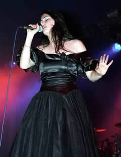
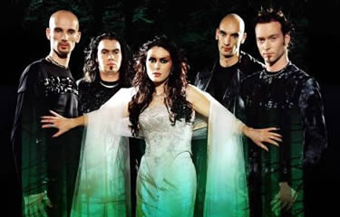

A banda holandesa Within Temptation foi fundada
em 1996. Mas a história tem início algum tempo antes,
quando Robert Hosterholt fazia parte de uma banda chamada The
Circle, e foi expulso (sem motivos aparentes) pouco antes
de o primeiro trabalho ser gravado. The Circle mudou
o nome para Voyage, e pouco depois das gravações,
o baixista Jeroen van Veen também foi expulso. Esse foi
o motivo definitivo para que Sharon den Adel (namorada de Robert)
deixasse a banda por sua opção.
Em
maio de 1996, Robert iniciou um projeto musical tendo a namorada
Sharon como vocalista, e convidando Jeroen van Veen (baixo), Michiel
Papenhove (guitarra), Martijn Westerholt (tecladista e irmão
de Robert), Richard Willemse (bateria), que mais tarde deixaria
a banda para a entrada de Dennis Leeflang.
Em setembro de 1996, a primeira demo intitulada
Enter foi gravada trazendo quatro músicas (Enter,
Candles, The Gatekeeper e Pearls Of Light).
Em novembro, o baterista Dennis desentende-se com os outros integrantes
e deixa a banda, para a entrada de Ivar de Graaf.
A fita gravada foi enviada para as gravadoras
e o sucesso garantiu vários convites. Em menos de dois
meses, a banda que já levava o nome Within Temptation,
assinava contrato com a DSFA Records, que era considerada uma
gravadora de pequeno porte. Apesar disso, os projetos da banda
foram alvo da atenção e dedicação
da DSFA. Logo após, o WT gravou uma segunda demo e aceitou
a proposta de lançar o primeiro álbum.
Restless, Enter, Pearls
of Light, Deep Within, The Gatekeeper,
Grace, Blooded e Candles eram as músicas
que compunham o CD de estréia intitulado Enter,
lançado em abril de 1997. Ao mesmo tempo, o Within Temptation
foi convidado para tocar no Campsite do renomado Dynamo 97,
este que seria apenas o quinto show da ainda prematura carreira
da banda holandesa. Porém, não tardou a primeira
excursão internacional. O Within Temptation tocou na Áustria
e na Alemanha, pouco depois gravou o single Restless,
que contava com três músicas.
No ano seguinte, a banda voltou a tocar no Dynamo,
mas desta vez ocupando um lugar de destaque no palco principal
(Main Stage). The Dance foi lançado em julho e
mais uma vez a banda trocou de baterista; desta vez Ciro Palma
ocupou a posição de Ivar de Graaf.
O ano de 1999 foi de dedicação para
a banda. Os integrantes terminaram os estudos e voltaram-se para
a montagem dos próprios estúdios musicais. Portanto,
não houve nenhum grande evento neste período.
Em
2000 foi lançado Mother Earth com a presença
do antigo baterista Ivar de Graaf. Este álbum não
trazia os vocais guturais de Robert Westerholt, mas foi aclamado
pela imprensa holandesa como um dos melhores trabalhos lançados
naquele ano. Neste momento, o Within Temptation já era
considerado uma das melhores bandas de Metal, acumulando uma legião
de fãs por onde passava.
Our Farewell e Ice Queen foram
os singles lançados enquanto as excursões internacionais
ocupavam todo o tempo. O Within Temptation chegou a tocar para
mais de 100.000 pessoas nos festivais da Holanda. A divulgação
pelas rádios e emissoras de TV estava intensa quando o
guitarrista Michiel Papenhove anuncia sua última participação
no show de Vlietpop, dia 14 de julho de 2001. Uma semana depois
Jelle Bakker (da banda Frozen Sun), assumia o posto de
guitarrista. Porém, foi substituído 6 meses depois
por Ruud Jolie, que é o atual guitarrista.
Em 2004 a banda volta aos estúdios e dispara
o single Stand My Ground. Porém, as novas músicas
já eram tocadas em suas apresentações ao
vivo. Este trabalho lançado em outubro traz o clipe da
faixa título gravada em Berlin. O álbum The
Silent Force chega no mês seguinte com onze faixas
principais e mais duas bônus inclusas em outras versões;
além de um Digibook e um DVD bônus.
Em Maio de 2005, é lançado o videoclipe
da música Angels e, posteriormente, também
são lançados singles Memories e Angels.
Em novembro, a banda lança o DVD triplo: The Silent
Force Tour e dá início às turnês
de divulgação.
Em dezembro de 2006, o Within Temptation assina
com a gravadora Roadrunner Records e grava um single com quatro
faixas e participação de Keith Caputo, do Life
Of Agony. No fim de janeiro de 2007, é divulgado no
site oficial o videoclipe da faixa título do single, e
em seguida é lançado What Have You Done.
Finalmente, em março de 2007, é lançado o
CD The Heart of Everything.
O mais recente trabalho, traz 11 faixas e em
menos de 1 mês vende mais de 150.000 cópias. As músicas
seguem uma temática semelhante a dos álbuns anteriores
e confirmam a identidade que o Within Temptation consolidou em
sua carreira. As faixas, The Howling e The Sound
Of Freedom são inclusas na trilha sonora dogame The
Chronicles Of Spellborn.
Assim, o Within Temptation
continua sua carreira de muito sucesso, produzindo seu som híbrido,
de gothic metal, doom e death, adicionando influências da
música clássica com o mais puro heavy, em uma rara
combinação de agressividade e sutileza entrelaçadas
com harmonia.
Por
Spectrum
Downloads
Disponíveis: